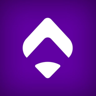

Program SportGuru Unirii
Programul de lucru, pauzele de masă și concediile.
Deschide programul
Pune iconița pe telefon:
iPhone (din Safari): butonul Partajare ⬆️ → „Adaugă pe ecranul principal”.
Android (din Chrome): meniul ⋮ → „Instalează aplicația” sau „Adaugă pe ecranul de pornire”.